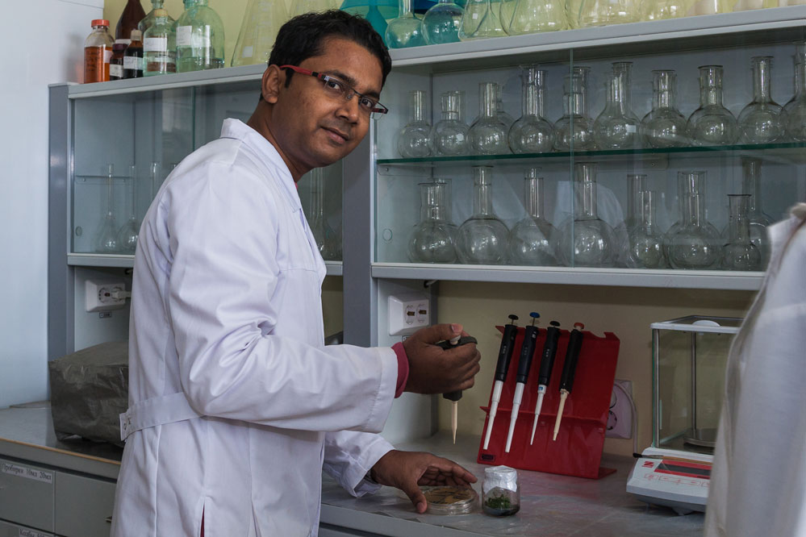

V polovině roku 2020 v Indii skupina vědců představila prototyp přírodního léku proti alkoholu. Řekli, že když člověk závislý na alkoholu bude používat tento přípravek jeden měsíc, tak se úplně zbaví alkoholismu.
Studie se prováděla na 16 klinikách pro léčbu závislých na návykových látkach, u pacientů s různými stadii alkoholismu - potvrzují indické vědci. Z testovaných 3211 pacientů, kteří užívali lék během jednoho měsíce 2984 se úplně zbavilo závislosti na alkoholu. Ostatní se také vyléčili, jenom jím to trvalo dalších pár týdnů.
Jak funguje lék
Vědci popisují působení léku jako přirozené lidské odmítnutí alkoholu. Látky, které tvoří nesnášenlivost k alkoholu jsou syntetizovány z plodů vinné révy a čínské magnólie. Částečně blokují rozložení ethylalkoholu v organismu a vyvolávají trvalou fyzickou nechuť k alkoholu.

Na rozdíl od tradiční léčby, kde závislý na alkoholu musí bojovat sám se sebou, tento přirozený přípravek funguje na psychologické úrovni.
Látky podporující aktivnější produkci serotoninu a dopaminu byly syntetizovány z pampelišky a kořene lékořice. Jejich užívání zlepšuje náladu a motivaci, pomáhá pacientovi si dát dohromady a zbavti se závislosti na alkoholu. Teké vyvolává pocit spokojenosti.
Po prvních dávkách léku organismus závislého na alkoholu člověka postupně se nastavuje tak, že nevníma ethylalkohol, touha po alkoholu potom mizí sama od sebe. Po měsicí pacient negativně reaguje na pach alkoholu. V některých případech člověk může i zvrácet. Lék potom působí i 4–6 měsíců. Takže pak času je dost na to, aby se člověk přizpůsobil a zvykl si na střízlivý zdravý život - takto stručně popisují účinek léku vědci z Indie.

Název a výroba produktu
Vzhledem k tomu, že po užívání léků tělo vnímá alkohol jako toxickou látku, byl indický přípravek pojmenován . Lék se prodává ve všech zemích Evropy, Jižní a Severní Ameriky prostřednictvím oficiálních údajů výrobce. Tady je webová stránka.
Díky tomu, že lék má prokázanou účinnost, prodává se volně a má příznivou cenu – hodně lidí má o lék zájem. Více informací o naleznete tady na oficiálních stránkách.
Komentáře
Konečně byl vynalezen ten právy lék proti alkoholismu0
Dominika Svobodová
03.05.2021
A pokud k alkoholickému nápoji přidáte , zbavite se alkoholismu? Pokud ano, pak to je super, když budu pít alkohol a zbavím se závislosti
Linda Jindřichová
05.05.2021
Z druhé láhve už vám bude nevolno))
Kateřina Prokopová
06.05.2021
Měli bychom požádat vědci z Indie, aby uvařili lektvar z bylin proti kouření, podle mého názoru je těžší zbavit se toho zlozvyků než alkoholismu
Marie Benešovská
07.05.2021
Zvyk kouřit neničí rodiny ...
Sandra Janošková
07.05.2021
Tento protialkoholický lék zachránil mého otce. Dávala jsem mu do čaje celý měsíc. Hned první týden jsem si všimla výsledek na vlastní oči, můj otec začal pít méně alkoholu. Na začátku léčby byl nějaký nemocný a pak odmítl úplně brát alkohol. Nelitovala jsem vůbec, že jsem se rozhodla lék objednát! Už třetí měsíc můj otec je střízlivý, a jsem šťastná!
Cena léků je opravdu dobrá, velmi se mi tento přípravek zalíbil. Navíc jsem dostal slevu, což je supér
Jana Kloboučková
10.05.2021
Vzpomínám si, jak se moje babička snažila léčit mého dědečka z alkoholismu pampeliškovými vývary, indičtí vědci toho o rostlinách vědí hodně,
Lék dostane víc nemocných lidí prostřednictvím oficiálních webových stránek. Velmi zdvořilé prácovnici, rychlé dodají lék vám domů a platba probíhá po obdržení balíku. Měla jsem jen pozitivní dojem z prvního nákupu přes internet
Adel Zvonářková
12.05.2021
pomohl mému manželovi konečně se zbavit své závislosti, získat práci a vyhnout se rozvodu
Dlouho jsem si rozhodovál koupit , protože jsem nevěřil tomu, že tělo pak samo odmítá alkohol. Ake moje žena trvala na tom, že to není sranda a je všechno pravda. A víte, po léčbě jsem si opravdu velmi litoval, že jsem lék nekoupil dříve. Zbavil jsem se závislosti na alkoholu velmi rychle, teď už to vůbec nepiju. Vypadám lépe, tělo už není tak oteklé. Nyní je přede mnou je další cíl - přestat kouřit.
Přípravek mi pomohl už za tři týdny a alkohol pro mě stal nechutným jako jed. Pokud se rozhodnete přestat pít, nepochybujte se a jděte na to. Lék si můžete koupit bez speciálního papíru od lékaře
Tato věc rychle odradí od závislosti na alkoholu, i když je vyrobena z přírodních bylin. Doporučuji všem alkoholikům
František Nový
15.05.2021
Nevím jak, ale funguje to! Rozhodl jsem se přestat požívát alkohol - byl jsem alkoholikem 6 let. Začal jsem brát , ale v mé rodině došlo k hádce a rozhodl jsem se opít jako vždy. Koupil jsem Tuzemák, nalil jsem to do sklenice a jen při myšlence, že to teď vypiju, mě se stalo špatně. Dál jsem skleničku s alkoholem do strany, což mě umožnilo zmírnit rodinný konflikt
Ilona Pekářová
17.05.2021
Jednoho dne, doufám, že bude existovat přírodní lék na jakoukoliv nemoc
Monika Korbová
18.05.2021
Často jsme pili s mým manželem alkohol a on se úplně vzdal a zvykl se. Báli jsme se jít k lékaři, ale přírodní přípravek byl pro nás nejlepší lék doma. Ale nemysleli jsme si, že tento lék fakt úplně zabije touhu po alkoholu ... už druhý měsíc kupujeme jen a jen džusy :)
Vaše zpráva byla odeslána moderátoroví